Strategy | Art Direction | Design
BFI Player Brand Identity
The British Film Institute appointed UFO to create an entirely new brand identity for their digital flagship, The BFI Player. Unlike other on demand services the BFI Player is curated by unparalleled experts in film, real people with a knowledge and passion able to unlock the largest archive of film in existence. It was this sentiment that underpinned our overarching brand strategy and informed the resulting creative. Project deliverables included logo, icons, typeface, colourway, overall design direction plus detailed brand guidelines.
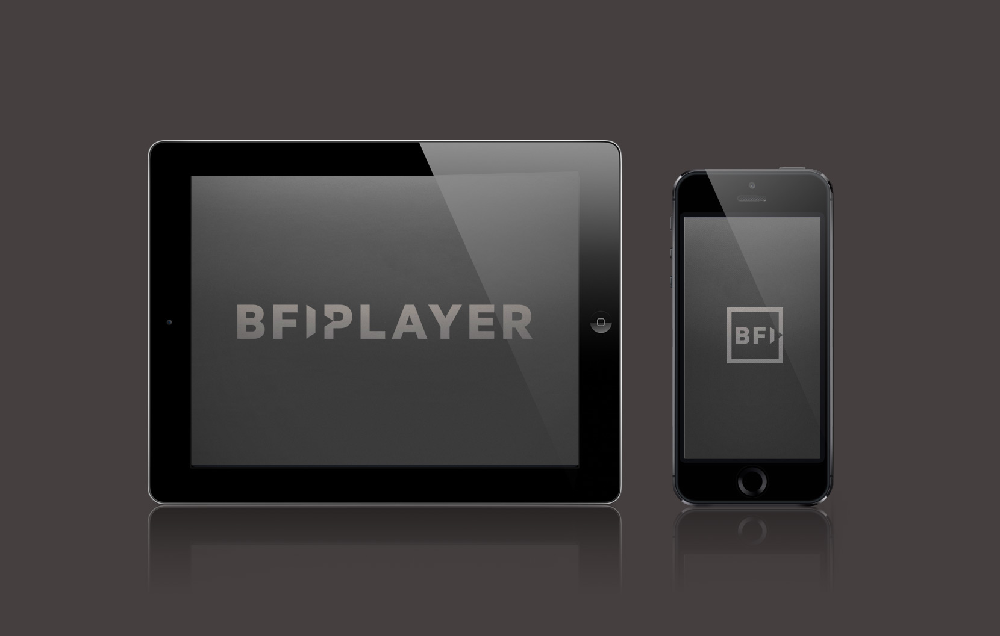 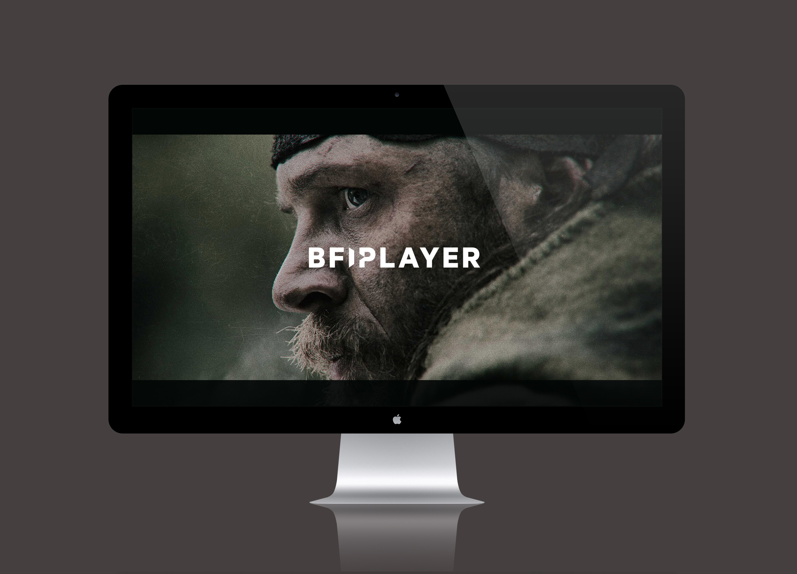 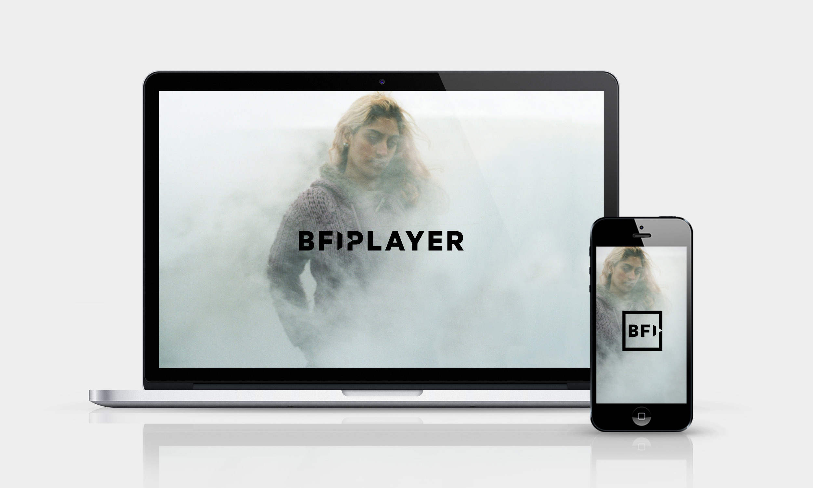 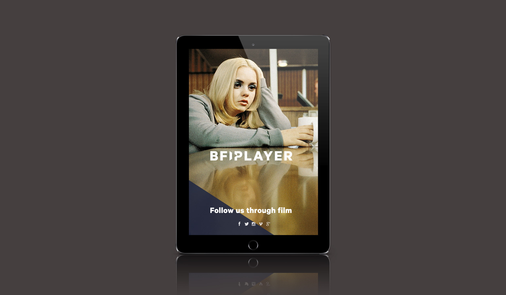 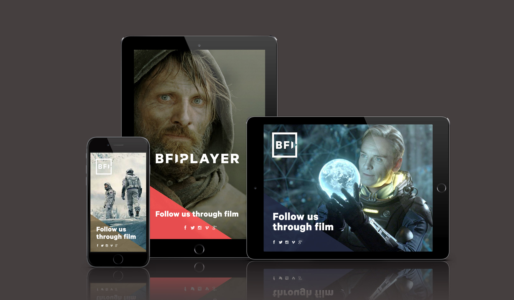 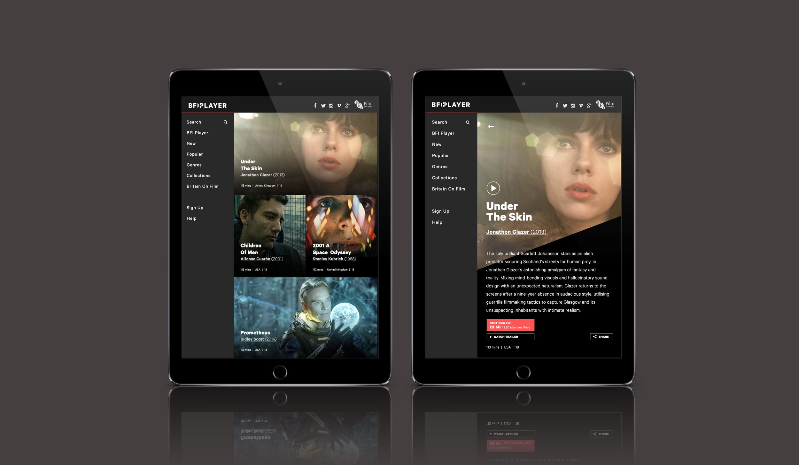 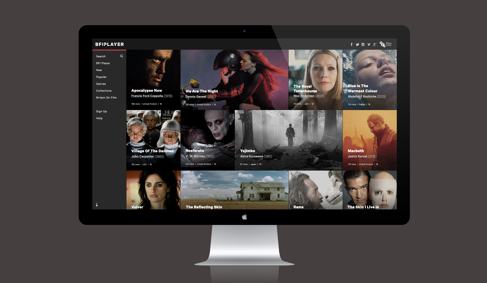 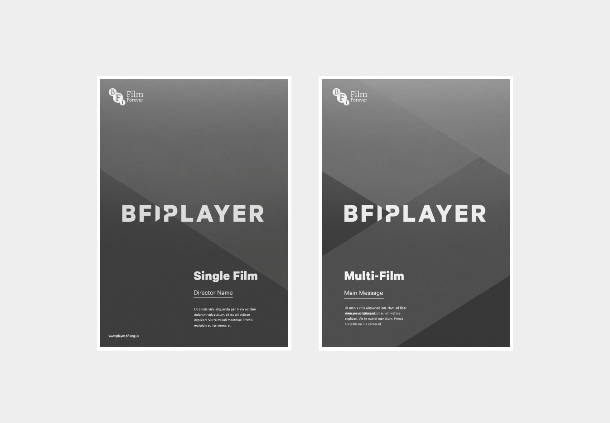 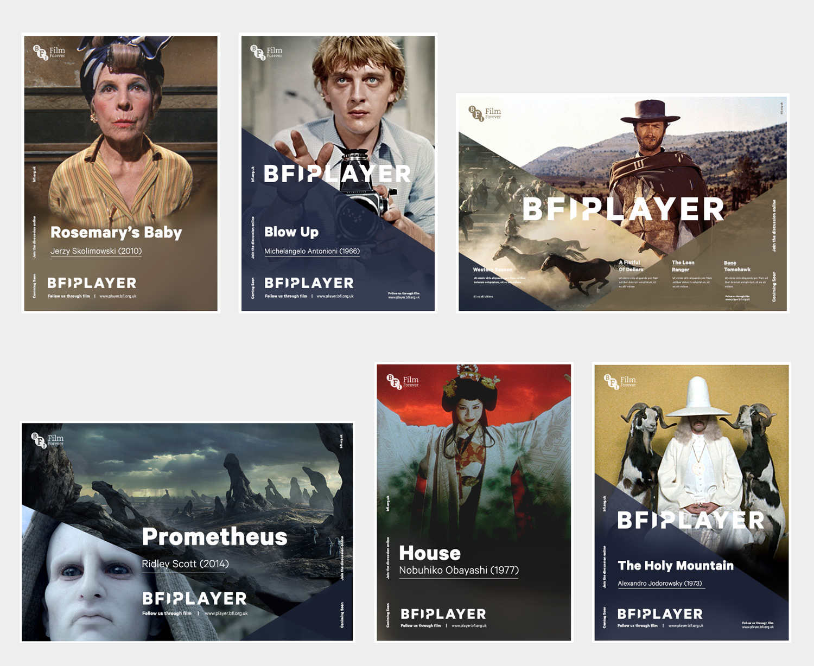
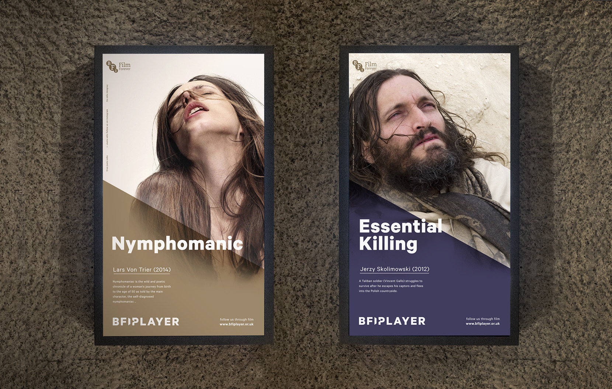
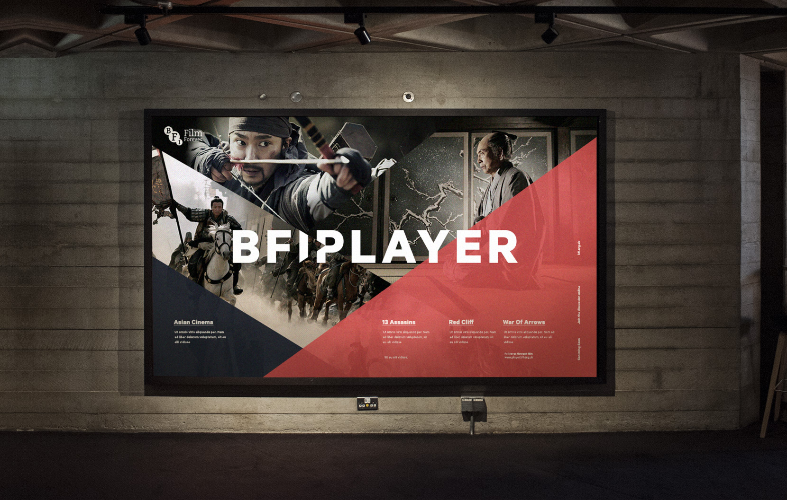
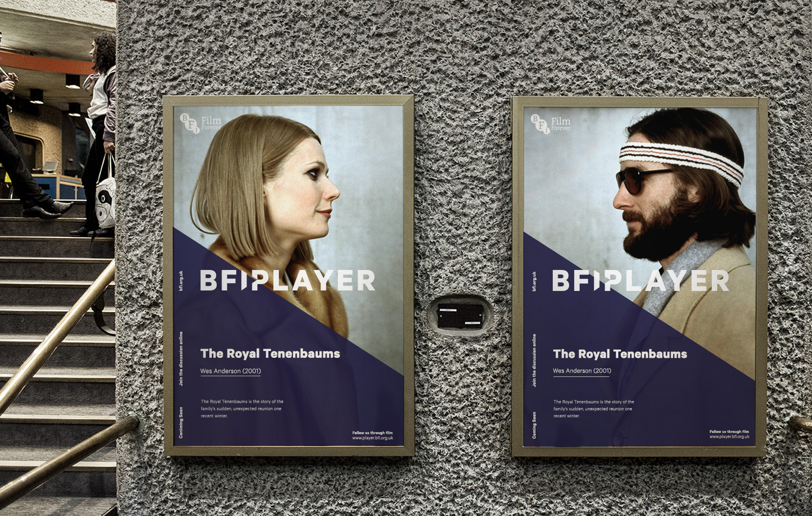 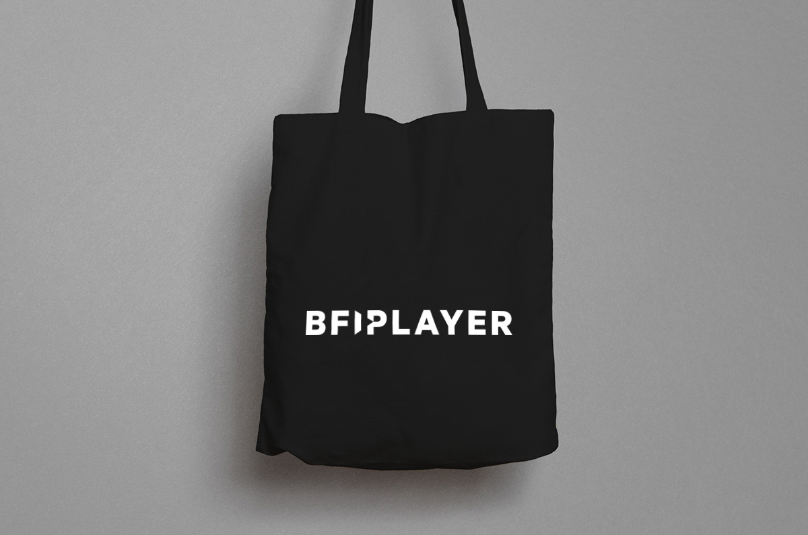